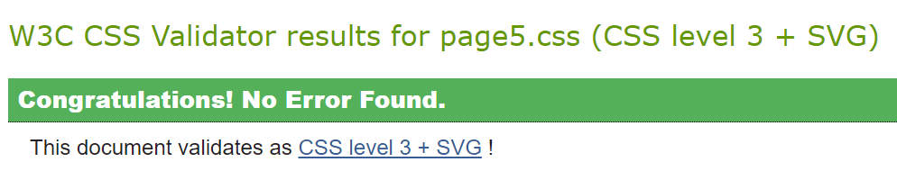
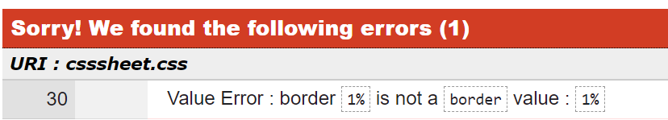
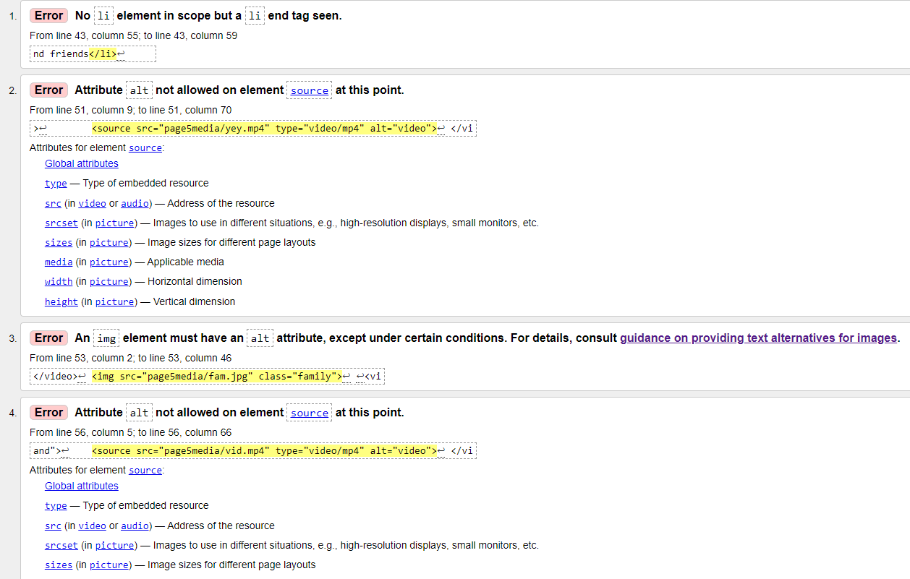
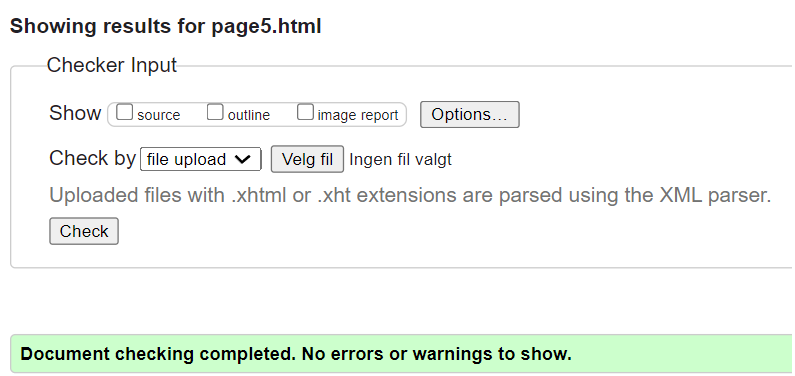

For us as a group it was important that the accessibility and clarity of the page was very simple. Easily accessible and can be used by anyone no matter what type of device or operating system. We have chosen English as language on all our pages, so that more users internationally can access it and read the content since English is the most common language in the world. While coding we had things like fonts and background colours in the back of our thoughts. During the construction of the code, we opened a preview on a local browser to see the outcome. Besides the HTML files we created separate CSS stylesheets. We used the HTML validator (https://validator.w3.org/) to check for any errors in our code. For the CSS files we used (https://jigsaw.w3.org/css-validator/).
 We tested both our CSS sheets for this whole web-page. For the surprise page and for the rest of the pages. After correcting the errors we received, we looked over the code multiple times and we managed to shorten it as well as much as possible. We double checked the code once again with the same tools to ensure that everything was correct. To check the code manually we used the “inspect” tool built in google chrome to go over the code on every single page we made. We also checked out html code and got some errors in out codes that we fixed. Here are some of the errors in our surprise page that we fixed.
 We also uploaded our code up to Github to that we could easily see how the webpages looked on other displays. This helped us a lot along the way. We also did automated with every single page we created to validate the code. This way along the way, we made less mistakes and the whole coding experience of this assignment was made alot easier.